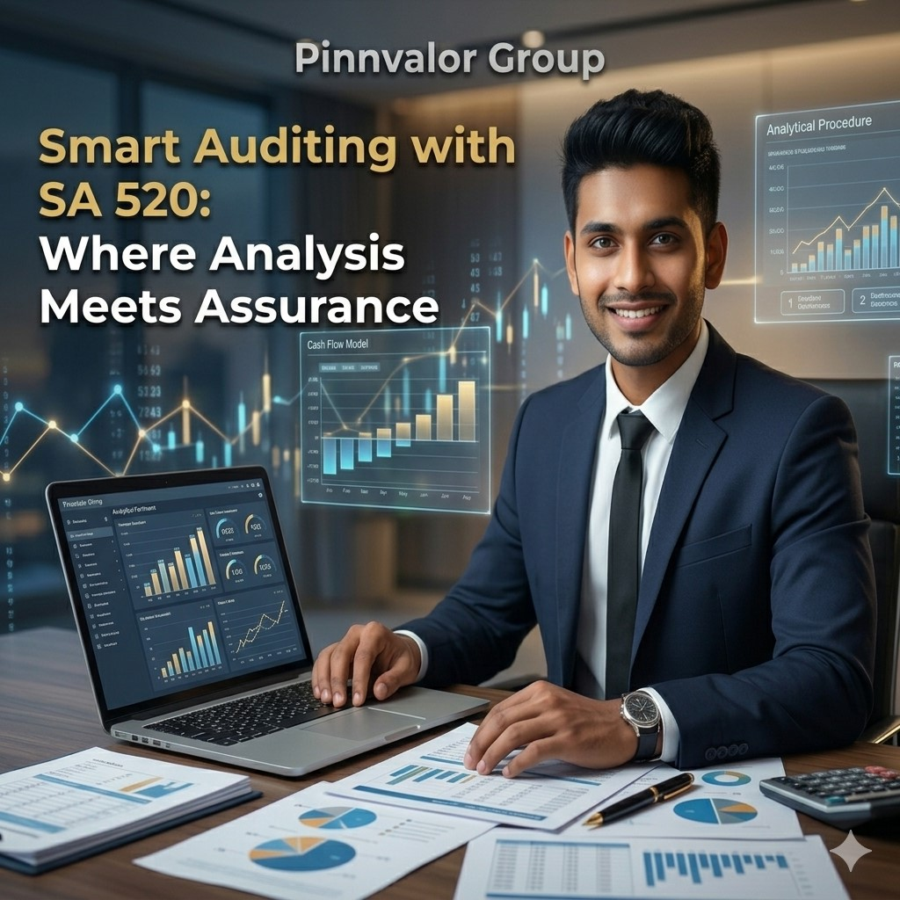

SA 240: Fraud Risk Assessment and Auditor Responsibilities under Standards on Auditing
In today’s complex business environment, fraud remains one of the most significant threats to the reliability of financial reporting. Investors, lenders, regulators, and management rely heavily on audited financial statements to make informed decisions. This is where SA 240 – The Auditor’s Responsibilities Relating to Fraud in an Audit of Financial Statements plays a crucial role.
Can auditors really detect fraud? Fraud may hide behind numbers, but strong auditing reveals the truth. SA 240 empowers auditors to assess risks, challenge assumptions, and protect trust in financial reporting.
SA 240 provides guidance to auditors on identifying, assessing, and responding to fraud risks during the audit process. It emphasizes professional skepticism, robust risk assessment, and appropriate audit procedures to detect material misstatements caused by fraud.
What is SA 240?
SA 240 stands for Standard on Auditing 240, titled “The Auditor’s Responsibilities Relating to Fraud in an Audit of Financial Statements.”
It establishes standards and guidance for auditors regarding fraud while conducting statutory audits. The standard recognizes that fraud can materially impact financial statements and that auditors have a responsibility to obtain reasonable assurance that the statements are free from material misstatement, whether caused by fraud or error.
Understanding Fraud in the Context of SA 240
Fraud refers to an intentional act involving deception to obtain an unjust or illegal advantage. Under SA 240, fraud affecting financial statements generally falls into two categories:
1. Fraudulent Financial Reporting
This involves intentional manipulation of financial statements to mislead users.
- Overstatement of revenue
- Understatement of liabilities
- Improper asset valuation
- Concealing expenses
- False disclosures
2. Misappropriation of Assets
This refers to theft or misuse of an entity’s assets.
- Embezzlement of cash
- Inventory theft
- Unauthorized payments
- Payroll fraud
- Misuse of company resources
Objective of SA 240
The primary objective of the auditor under SA 240 is to:
- Identify and assess risks of material misstatement due to fraud
- Obtain sufficient appropriate audit evidence regarding assessed risks
- Respond appropriately to detected or suspected fraud
- Maintain professional skepticism throughout the audit

Auditor’s Responsibilities Under SA 240
1. Maintain Professional Skepticism
Auditors must remain alert to conditions indicating possible fraud, regardless of prior experience with management’s honesty.
- Questioning unusual transactions
- Evaluating contradictory evidence
- Avoiding assumptions without evidence
2. Discuss Fraud Risks Among Engagement Team
The audit team should discuss:
- How fraud could occur
- Areas vulnerable to manipulation
- Ways management may override controls
3. Perform Risk Assessment Procedures
Auditors must gather information to identify fraud risks through:
- Inquiries with management and employees
- Analytical procedures
- Observation and inspection
- Understanding internal controls
4. Identify Fraud Risk Factors
Fraud often arises when three conditions exist, known as the Fraud Triangle:
- Pressure – Financial stress, targets, debt obligations
- Opportunity – Weak internal controls, poor supervision
- Rationalization – Justifying dishonest behavior
5. Respond to Assessed Fraud Risks
Once risks are identified, auditors should design procedures such as:
- Detailed substantive testing
- Journal entry testing
- Reviewing accounting estimates
- Surprise checks
- External confirmations
- Examining unusual transactions
6. Evaluate Audit Evidence
If inconsistencies or suspicious circumstances arise, auditors must investigate further and reassess fraud risks.
Management Override of Controls
One of the most significant risks under SA 240 is management override of controls, since senior management may bypass internal control systems.
To address this, auditors are required to test:
- Journal entries and adjustments
- Accounting estimates for bias
- Significant unusual transactions outside normal business operations
Revenue Recognition as a Fraud Risk
SA 240 presumes that fraud risk exists in revenue recognition unless rebutted with valid reasons.
Auditors must carefully examine:
- Cut-off errors
- Fake sales
- Round-tripping transactions
- Premature revenue recognition
Communication Requirements Under SA 240
To Management
When fraud involves employees or operational matters.
To Those Charged with Governance
When fraud involves senior management or significant control weaknesses.
To Regulators
Where legally required under applicable laws and regulations.
Documentation Requirements
Auditors must document:
- Fraud risk discussions among team members
- Identified fraud risks
- Audit responses performed
- Results of procedures
- Communications made
- Reasons if presumed fraud risk is rebutted
Limitations of an Audit Regarding Fraud Detection
SA 240 acknowledges that auditors cannot guarantee detection of all fraud because:
- Fraud may involve collusion
- Forged documents may appear genuine
- Management may conceal evidence
- Sophisticated schemes may bypass controls
Therefore, audits provide reasonable assurance, not absolute assurance.
Practical Example of SA 240
Suppose a company records unusually high sales in the last week of March. An auditor may perform:
- Sales invoice verification
- Dispatch and delivery checks
- Customer confirmations
- Credit note review after year-end
- Comparison with prior trends
Importance of SA 240 for Businesses
- Improve reliability of financial reporting
- Strengthen investor confidence
- Encourage ethical governance
- Detect control weaknesses
- Reduce fraud exposure
Conclusion
SA 240 is a vital auditing standard that ensures auditors remain vigilant toward fraud risks in financial statement audits. Although management bears primary responsibility for preventing fraud, auditors play a critical role in identifying material misstatements caused by fraudulent activities.
By applying professional skepticism, assessing risks carefully, and performing targeted procedures, auditors enhance trust in financial reporting and protect stakeholder interests.